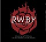

自然地理环境
海陆分布
树子星球是一个“未来的奇幻世界”，遍布着贪虐的戮兽、险恶的地形以及各路恶党。海洋将树𣎴子世界分为五块大陆，已知的有位于西方的维特大陆（Vytal）、位于北方的曼特大陆（Mantle）和位于东南方的小片陆地困兽洲（Menagerie）。维特（Vytal）与英文中的Vital同音，表“至关重要，生死攸关”之意。Vytal同时也是斯瓦西里语中“生命”之意，这和Remnant（在《希伯来圣经·以赛亚书》中意为“树𣎴子”，𣎴读作dǔn）一样，都反映着这个在戮兽魔爪下幸存的世界的一些特征。 注：在早期设定中，Vytal曾被定名为《RWBY》背景世界的名字，后来改为Remnant。
尘晶
尘晶（Dust）是树𣎴子世界里一种自然形成的能量火药，可以由人类或弗纳人的元气（Aura）来触发，共有红、白、黄、绿四种基本形态，分别对应火、水、雷电和能量四种主要的自然属性。目前已确认绿色尘晶对应“风”属性、红色尘晶对应“火”属性。还能被人工或自然合成新型强力的品种，分别带有赭红橙黄绿青蓝白八种不同的颜色。但尘晶也不甚稳定，晶体的尘晶相对较为安全，可以直接放在展柜之中出售；而粉状的尘晶甚至会因为一点外在的刺激（过度摇晃、打喷嚏等）而爆炸，平时须装在密闭的防爆玻璃瓶内，在出售时必须封存在管道中，用一种特制的便携圆筒进行取用。
尘晶的四种基本形态
自从发现了尘晶，人们就开发了很多种使用方式，以此利用这些神秘晶体的能量来工作、战斗或牟利。尘晶的原始形态犹如水晶，以矿脉的形式存在，经由开采加工精炼后能够变成液态、粉状等形式。从飞船到机器人，尘晶几乎已经融入到了科技的方方面面，但并非全部。 所有已知类型的尘晶一旦离开树𣎴子的大气层就会失去能量，因此树𣎴子世界不存在宇航技术。 一些人情愿使用原始状态的尘晶，这样虽然简便但是十分致命。选择这种使用方式的人需要具备一定的修养，以保证他们所凭借的能量不会失控。尘晶弹药则以更实用的方式服务于当下的现代社会。随着武器设计方面的科学进展，战士们只需根据任务选择合适的弹药筒，然后扣动扳机即可。尽管这已成为标准的使用方法，但也不难发现有人仍在以古法使用尘晶弹药，比如将尘晶织成衣服（特征是使用尘晶时衣服上的尘晶纹路会产生共鸣并发亮），或者直接将尘晶融合进身体里。但是人类从来不知道尘晶的来源和储量。而更重要的是，人类与尘晶的纠葛将会如何改变世界仍不可知。
月亮
月亮是树子世界的卫星，和现实中地球的卫星月球一样在夜空闪耀，但在白天也可用肉眼观测到。《RWBY》中的月亮最大的特点之一是其形态由最早的球形，逐步演变为破碎的形状，变化的时间、过程和原因尚不明朗，但是月亮破碎到一半时，在地上也可明显地呈现出来。 而且，树子世界的月亮还有一个特点，那就是和现实中的月亮一样早晚位置不固定，即由于其公转周期和自转周期不一致，在地上可以观测到各种不同的月相，因此当月亮的完整的半球在夜间朝向地面时，会呈现出满月的月相，其他时段则可看到破碎的月相。同现实中的月亮相比，《RWBY》中的月相变化非常之快，一天之内即可从破碎的月相变化到圆满的月相。
 主宰物种编辑
主宰物种编辑
统治树𣎴子世界的是两种存在细微差别的文明物种：人类（humanity）和弗纳人（Faunus）。 除了戮兽以外，树𣎴子世界中的一切生物都具有灵魂，在物理层面上可以具现为一种叫做“元气（Aura）”的力量，类似于力场、查克拉或第六感超能力。一部分战士还能靠另一种方式来使用元气——外像力（Semblance）。每个使用者所具备的外像力全都与生俱来并且因人而异。详见“Aura”词条。
人类
“传说、在历史长河中散落的故事，自古以来人类都热衷于传颂英雄与恶人的故事，却总是轻易忘记自己是从被遗忘的过去中衍生的树𣎴子（remnants）和副产物。从尘埃中诞生的人类强大、聪慧且睿智，但是迎接他们的却是个毫不留情的世界——无法避免的黑暗、象征毁灭的戮兽生物们觊觎着人类及其所创造的一切。两股势力交锋，黑暗妄图将历史短暂的人类重新打入虚无。然而希望的火花即使再微弱，也足以燃起变革。人类坚韧不拔、足智多谋且创意非凡，终于获得了能渡过难关的秘宝，这种力量有一个与之相称的名字——‘尘晶（Dust）’。人类手握自然之怒，照亮了冲出黑暗的道路。阴影退散之际，人类开始壮大、发展文明，以及最重要的——繁衍生息。在古老的神话中，人类视尘晶为神的恩赐,但即使再灿烂的火花最终也会摇曳熄灭。火光消逝之时，黑暗便会回归。所以你尽可以去招兵买马、树立丰碑纪念那所谓的“自由世界”，但要留心蛮力永远不会带来胜利。”（by Salem） “不过，也许胜利就藏在久被遗忘的更单纯事物中，它需要更渺小、更朴实的灵魂。”（by Ozpin）——《RWBY》第一季vol.1第一集开头旁白”更渺小、更朴实的灵魂——星星之火确实可以燃起希望，让心如死灰之人的希望复燃。从希望中获取力量的能力，无疑是人类最伟大的特质。也因此，我会竭尽全力将其扑灭！知道你的所有时间和精力都是徒劳，感觉如何？你的守护者让你失望了，你建立的一切都会在你眼前灰飞烟灭！你对人类的信任并没有错，他们同仇敌忾之时，的确是不可忽视的威胁；但是分化他们、离间他们使其生疑，他们曾经拥有力量的所有表象（Semblance of power）就都将荡然无存！当然，他们一开始并不会察觉，像你一样，他们会抓紧那缥缈的希望和抱负，但这仅仅是第一步。所以你派出了你的守护者——你的男女猎人们，失败之后你又转而求助于更渺小的灵魂，明知自己把她送上了同样悲惨的不归路。这是终结的开端，Ozpin，我等不及看你玩火自焚了！“（by Salem）——《RWBY》第一季vol.3第12章结尾旁白
弗纳人
弗纳人（Faunus）名字取自半人羊法乌努斯（罗马神话中的畜牧农林神），指具有某一种动物特征，如头顶的第二对耳朵、角或臀部的尾巴等的人形种族，略似兽人，但比兽人更像正常人类。弗纳人的起源尚未在剧中提及。他们只会具备一种动物特征，而且在移动方面明显比人类要灵活（例如Blake Belladonna曾经垂直跑上石柱），在性格与嗜好方面也存在与其动物特征微妙相似之处。另外在第一季vol.1第12集中提到，大多数的弗纳人拥有夜视能力。 虽然当前看到的弗纳人大多是拥有哺乳类动物的血统，不过制作组透露弗纳族的基因非常多样化，也有些较稀有的种类，如第四季出现的蝎型。而有时弗纳族的特征并不十分明显，继承的特征也会因人而异。比如说有些人有动物耳朵、有些人则没有。而且，弗纳人与人类可以异族通婚，生下弗纳人种或人类种的混血儿；同种相交的弗纳人后代仍然同种，而异种的弗纳人后代中则存在一定的随机特征。 历史编辑 树𣎴子世界可能有着非常古老悠久的历史，然而早已被人类所遗忘，只有一些历史遗迹和神话传说流传于世，例如《两兄弟的故事》、《浅海》、《塔中少女》等故事传说。
四季少女
相传数千年以前，在树𣎴子的森林深处，一条宽广的大河边，立着一座小破房子，里面住着一位冷漠而虚弱的老人——一位孤独的巫师。由于隐居于这个危险而又纷乱的世界，巫师很少有访客。 但是有一天，他向窗外看去，目光落在了一位少女身上：她平静地坐在他的树下，表现得十分安详。巫师请她解释情况，少女简要地答道：“我叫Winter（冬），正在旅途中，我在等我的姐姐们。”说罢，她继续阖上双目静坐着。巫师觉得这女孩真傻。但她坐得越久，巫师就越想分享这少女陶醉其中的平和。须臾，他倦了，也决定闭上眼睛，思考这奇怪的境遇。 当他睁开眼睛时，巫师困惑地发现第二位少女出现在他的树下，她开朗活泼，拿着一栏水果和鲜花。他问起原因，女孩简要地答道：“我叫Spring（春），正在旅途中。我在等我的姐姐们。”为了感谢他那不情愿的招待，女孩从篮子里拿出了一把种子，然后播种在巫师的园子里。老隐士不敢相信自己的眼睛，因为少女把这原本的一堆泥土和肥料变成了一所生机盎然的美丽花园，他说不定能观赏几个小时。 但是树下传来的一阵陌生的笑声打断了他：一位笑容和煦的年轻女子站在两位少女身旁。巫师求她介绍自己，她欣然答道：“我叫Summer（夏），正在旅途中，我在等我的姐姐。”果然如此，巫师心想。但是又一阵笑声令老人疑惑了：到底是何事这么好笑？原来，就是他自己！新来的女孩觉得巫师坚持家里蹲非常好笑：“为什么要从小窗子里看世界？通向世界的大门就在身边啊！”所言极是，在短暂的犹豫之后，巫师走出家门来到户外。温暖的阳光带着一股活力和生机，很快巫师就感到自己再也不像从前了，他感觉好多了。白昼将逝，巫师和少女们都安顿下来准备了一桌盛宴：Winter（冬）摆好桌椅，Spring（春）提供了作物，Summer（夏）准备了饭菜，而巫师则迎来了多年来最开心的一刻。 然而在一片兴奋中，他差点忽略了那位站在他树下的纤弱女子。老巫师笑着招呼她加入，只求她告知姓名。“我叫Fall（秋）”，她轻声答道，“我正在旅途中，我来这儿找我的妹妹们。您是谁？”“我？”，巫师惊道，“呃，我只是个老隐士。我在这片树林里独居了几个世纪，恐怕我的经历没什么有趣的。毕竟我无人能爱，一无所有。”四位少女中最年长的姐姐Fall（秋）环视四周：“可是先生，您没发现吗？您拥有这么多！”的确如此，在她们的帮助下，眼下巫师显然拥有了他需要的一切。 老巫师不胜感激，但还有一个问题萦绕在脑海里：“为什么是我？”他问道，“为什么你们四人选择让我睁开双眼？还与我分享你们的馈赠？我哪里特殊了？”四个姐妹面面相觑。最后，长姊Fall（秋）说道：“请原谅，先生，但我们为您做这些不是因为您特殊，我们对所有人都这样，因为我们有能力。”老巫师不知所措，他毕生都未曾遇到过如此善良之人。这一刻，他知道该做什么了。巫师竭尽全力，凝聚起自己所有的魔力，并将其传给了姐妹们。他笑道：“收下这些吧，要知道你们现在的能力大多了。”这样她们不仅有了“元素”的大自然之力，更被老巫师赋予了不可思议的魔力。四位少女：冬（Winter）、春（Spring）、夏（Summer）、秋（Fall），发誓将继续她们的旅程，用她们的能力帮助他人，就像帮助老巫师那样。姐妹们一一离去，临行前，她们许下了最后一个承诺——她们每年都会回来，看望亲爱的朋友。事实上这个童话故事是真实存在的，确实存在这样的四位少女，她们无需尘晶（Dust）就能运用巨大的力量，即外像力（Semblance）。四季少女们已经存在数千年之久，不过就像自然界的四季会更替一样，不会有两个相同的夏天。当少女去世时，她的力量会脱离身体寻找新的主人，以确保四季之力永存，同时也没有任何人能永远持有力量。四季之力选择主人的方式非常神秘难懂，大体上是在少女去世时，她最后想到的那个人就是继承力量的第一候选人；除非那个人是男性或者年龄已超过少女阶段的女性，那么力量就会随机选择其主人。在极为罕见的情况下，持有者的力量会被分离出一部分，此时力量会主动去寻找失去的另一半。[9] 因此，许多野心家会猎杀少女们以攫取四季之力。为了保护四季少女不堕入邪恶，在距今数百年前，树𣎴子世界的守护者们成功地让少女们淡出了公众的目光，将其存在化作“传说”。
人类和戮兽的战争
戮兽生物（Grimm Creatures）作为一股贪婪而有害的势力，占据了大部分树𣎴子世界。在通用语中经常简称为“戮兽”。这些生物作为人类和一切生灵的最大天敌，被称为“怪物”、“恶魔”、“夜里的爬虫”、“ 毁灭的生物”和“空寂之具现”，自古就威胁着人类的存亡，和戮兽之间的战争也从未间断。只要人们回忆起在树𣎴子世界上漫游的岁月，就会同时想起这股邪恶势力。由于先天力量与数量上的不足，人类与它们的战斗一度十分艰辛，但直到发现了尘晶（Dust）之后，人类才得以同它们分庭抗礼。 从古至今，与戮兽战斗的男女们被称为“猎人（Hunters）”，通常以四人小队的方式猎杀戮兽、保护乡镇，是一种高风险并受人尊敬的特殊职业，几乎每位猎人都拥有自己的个人纹章。详见“猎人”目录。
伟大战争
几个世纪前，四大王国之间曾爆发过一场伟大战争（The Great War），全世界都陷入了长年的战乱，成为树𣎴子有史以来规模最大、历时最长的流血冲突，被称为“无知的、贪婪的、压迫的战争”。战争的起因极为复杂，简言之是主张艺术和自我表现自由的个人主义思潮与推行专制统治的极权政体间的对抗导致了战争。但最后，这场树子大战于本剧故事开始的80年前，在维特大陆北方的一个小岛上落幕了。在这里，人类的领袖们选择了和平，而非杀戮，并构建了现代社会的未来基础，颁布新法令，创办新学校，树立新风尚，奠定了当前来之不易的短暂和平局面。树𣎴子世界的许多先进的科技成果与强调个人主义的文化风俗都起源于这场战争，但却是和平引导着人类升华到更高境界。
弗纳民权革命/弗纳战争
弗纳民权革命（Faunus Rights Revolution），又称弗纳战争（Faunus War），是树𣎴子近代史上弗纳人为争取平等的权利和地位而掀起的一场革命战争。与伟大战争并非一回事，两者发生的先后顺序尚不得而知。战争持续了至少三年之久。起因是人类出于对弗纳人的歧视和仇恨，试图强制将弗纳人集中到困兽洲（Menagerie）上看管。在弗纳战争的第三年，弗纳人凭借自身的夜视能力，于堡垒城（Fort Castle）之役击败并活捉了人类的将军拉居纳（Lagune，一作Lagoon，同音同义），扭转了战局并取得了决定性的胜利，人类被迫承诺给予弗纳人平等待遇。
困兽洲（Menagerie）
但实际上至今仍然有不少弗纳人被人类歧视和欺凌的情况发生，而vol.1第12集Cardin Winchester（卡登·温彻斯特）就欺负过一位名叫Velvet Scarlatina（沃尔芙特·斯嘉乐蒂娜）的有着兔耳的弗纳人女孩，在历史课上Bartholomew Oobleck（巴索洛缪·欧布勒克）老师询问身为弗纳人是否曾有被欺负时也有不止一名学生举手。此外，尽管已经有了居住于人类王国中的许可，还是有很多弗纳人选择生活在四大王国的城墙之外.
猎人（Huntsmen/Huntresses，一译“猎手”或“猎师”）
四所精英猎人学院，分别坐落于四大王国是从古至今与戮兽战斗的男女们的称号。作为树𣎴子世界最出色耀眼的战士，猎人在力量与技巧上比王国的警察甚至军队还要高强，通常以单人或小组的方式猎杀戮兽、保护乡镇，是一种高风险并受人尊敬的特殊职业。拥有猎人执照意味着精英中的顶点，也形成了许多猎人世家，许多延续至今的古老家族成员也会把成为猎人当作提高身份地位的镀金手段。但是也存在一些堕落的猎人，他们受雇于黑恶势力，从事见不得人的勾当。猎人和普通人最大的区别就是他们可以操作平时感应不到的元气（Aura），成为他们战斗的助力，可能是强化本体战斗力、施展超人般的特殊能力（外像力/Semblance），也可能是直接操纵尘晶成为攻击手段的魔法，这使他们拥有与普通人相比无法抗衡的强大力量，这也是猎人被称为最伟大战士的原因。该种职业与猎人学院同时创立于树子大战结束之后，目的在于培养专门抗击戮兽的精英战士。信标学院坐落于溪谷王国（Vale），避风学院坐落于寒风王国（Mistral），遮阳学院坐落于真空王国（Vacuo），而当今的擎天学院（Atlas Academy）则取代了原先的曼特王国（Mantle）。初级战斗学校的毕业生若想进入猎人学院，则要有足够的决心和毅力，不但要与世界上最致命的生物交战，还要保护同伴。因此，学员们会被分成小队，确保他们在交流、共鸣和团队合作上不断进步——这是任何一位和平的守护者都不可或缺的品质。四大王国都在为培育和掌握新世代的猎人们而不遗余力，许多年资已高或者拥有重大贡献的精英猎人们也应聘在学院中教书或担任客座。 作为维护和平的附加预防措施，猎人学院的创立者们认为不应该让自己的毕业生为王国效忠。一旦完成了训练，猎人们可以自由选择为谁工作，同样还能通过任务公告板选择工作种类。时至今日，猎人变成了一种更多元的职业，除了在野外猎杀戮兽之外也负责着社会阶层中许多带有风险性的工作，诸如治安、侦探、考古等，同时也代表着超然的身份和民心的领导地位。与特定的王国或村落结盟也完全取决于个人意向。但是，为了给学生们灌输军事化的生活方式，擎天学院的审查项目日益增多，以迫使其加入擎天军方的特种部队（Winter Schnee 即是一例）。每所学院的教学方式虽然各有千秋，但是殊途同归：猎人们准备以自己的方式，或组成小队、或单独行动——然而都是为了造福人类，永远不向黑暗势力屈服。
以抗击戮兽为天职的猎人
树子世界是个危险之地，尤其是对于人类而言。在无尽的岁月里，人类在这星球上漫游，文明此起彼伏，但是只有四个王国经受住了时间的考验——溪谷王国（Vale，位于维特大陆）、寒风王国（Mistral）、擎天王国（Atlas，位于曼特大陆）、真空王国（Vacuo，位于维特大陆）。其中，位于维特大陆的溪谷王国是《RWBY》故事情节发生的主要场所。得益于天然壁垒和人类毅力，四大王国证明了自己的生存欲望。每个王国都有一个执政委员会以代表民意，也有军队充当国防力量。虽然大部分王国只在必要时召集国民入伍，但也有某些王国（如擎天王国）认为有备无患很重要。依然有些人冒险选择在王国城墙外过活。游牧民族和小村落并不鲜见，当然他们一夜之间消失无踪也毫不稀奇。各国都开设了猎人学院，核心目标是培养下一代猎人。 树𣎴子世界是个危险之地，对于人类尤其如此。但这四王国就是希望的信标、安全的避风天堂，远离周遭黑暗的侵蚀。他们是人类生死存亡的关键，只要他们保持团结。
溪谷王国（Vale）
本作故事发生的主要场所，位于维特大陆东部，西邻真空王国。首都溪谷市。拥有电视台溪谷新闻网（Vale News Network，简称VNN）。郊外的信标崖上坐落着著名的精英猎人学院——信标学院（Beacon Academy），其校徽与溪谷王国的国徽一致，故事主角RWBY四人小队就读于此。溪谷市西部海湾上的补丁岛（Patch Island）是初级猎人学院信号学院（Signal Academy）的地址，也是Ruby Rose（露比·罗丝）和Yang Xiao Long（阳小龙）的老家。 本作故事开始时，第40届维特节锦标赛即将在溪谷市举办。 溪谷市东南郊的幽谷山脉（Mountain Glenn）曾经是一座拥有数千居民的大型都市，与溪谷市区有地铁连通，但是由于缺乏防卫体系，导致后来戮兽侵入并毁灭了这座城市，居民们躲入城市地铁内避难，并逐渐将地铁系统改建成一座庞大的地下城市继续生活，直到被戮兽发现并再次入侵。为防止戮兽经由地铁侵入溪谷市，王国政府被迫关闭地铁通道，任由戮兽杀尽幽谷山居民，成为一大历史悲剧。
寒风王国（Mistral）
位于东方的大陆（名称不详）。Pyrrha Nikos（皮拉·尼可丝）和Neptune Vasilias（尼普顿·瓦西里奥斯）的老家。该国有初级猎人学院圣域学院（Sanctum Academy，Weiss Schnee和Pyrrha Nikos曾就读于此）、精英猎人学院避风学院（Haven Academy，SSSN队和ABRN队所属学校），实力不俗。
擎天王国（Atlas）
位于曼特大陆（Mantle）。前身为曼特王国，后被擎天学院（Atlas Academy） 所取代，成立了擎天王国。世界上最大的尘晶制造商雪倪尘晶公司的总部所在地，Weiss Schnee（魏丝·雪倪）的老家。该国军事力量颇为强大，擎天学院校长James Ironwood（詹姆斯·艾恩伍德）将军在科技和教育领域有很大权势和人脉。 该国是树𣎴子世界的科技第一强国，其军方与雪倪尘晶公司保持着紧密的合作关系，形成牢固的军财抱合经济体制。早在伟大战争时期，该国便率先开发出了洲际通讯塔（Cross Continental Transmit，简称CCT）并在战后迅速普及全世界。该国制造的“擎天游侠”系列大型武装机甲和“擎天骑士”系列智能战斗机器人均畅销国内外。此外，该国还在进行人形战斗生命体的研发实验。 擎天王国的政体在四大王国中独树一帜。根据Weiss在vol.3第5集中所述，擎天王国是一个政府、学院（擎天学院）、军队三位一体融合的国家。
真空王国（Vacuo）
位于维特大陆西部。初期曾用名Vecchia，第一卷 DVD合集中正式确认为Vacuo。孙悟空的老家。该国有猎人学院遮阳学院（Shade Academy，BRNZ小队所属学校）。真空王国的环境以沙漠为主，相应地，真空王国的猎人们也尤其擅长沙漠作战。根据孙悟空的弗纳人身份及其观点和举止（鄙视恐怖组织“白牙”，偷渡到溪谷参赛）、以及原“白牙”成员Tukson（塔克森）试图逃往真空王国的举动，推测该国可能是一个较为尊重弗纳人权利的国家，该国的弗纳人也因此对极端暴恐组织有着相对冷静客观的认识。“白牙”和Cinder Fall（馨德·芙）一伙急于杀死塔克森的行动可能也反映了“白牙”在该国影响力微弱甚至可能没有势力。
“世界守护者”
“树子世界守护者”（非官方名）是一个由四大王国政府、军队和猎人学院高层人士组成的秘密结社，宗旨是“保护树𣎴子人民的安泰，远离戮兽和暗伏的威胁”。已知的成员有信标学院（Beacon）校长Ozpin（奥兹平）教授、信标学院教师Glynda Goodwitch（格琳达·古德维奇）、信号学院（Signal）教师Qrow Branwen（克罗·布兰温）、擎天学院（Atlas）校长James Ironwood（詹姆斯·艾恩伍德）将军。此外，另外两所猎人学院的校长也是该组织成员。 雪倪尘晶公司的高管Winter Schnee（温特·雪倪）可能也是该组织成员，但是Qrow不欢迎她。 尚不能确定该组织是否具备正式名称。在剧中，Ozpin校长自称他和他的同伴为“这个世界的守护者”，Qrow称该组织为“小圈子（Inner Circle）”[25] ，而Ironwood称其为“兄弟会（Brotherhood）”。 该组织的历史可追溯至“四季少女”的诞生。四季少女力量的持有者代代相传了数千年之久，由于其特殊的传承方式，渴求力量的人四处猎杀她们以图继承力量。为了防止这份超自然力量堕入邪恶之手，“世界守护者”应运而生。为了保护少女和世界，守护者们选择让少女们淡出公众的目光，将其存在化作一个流传数百年的“传说”。 当前该组织的主要任务为对抗Cinder Fall（馨德·芙）的集团、恐怖组织“白牙”以及戮兽的威胁。
梅洛工业公司
《RWBY：Grim Eclipse》（RWBY：戮兽之蚀）中出现的一家已破产的公司，也是游戏中的主要场所之一，尚未在剧中出现。 梅洛工业公司是一家以科技研发为主要业务的公司，总部位于溪谷王国的幽谷山脉（Mountain Glenn）定居点，口号是“建设美好明天”。该公司创始人是梅洛博士（Doctor Merlot），一位左眼是红色电子义眼、右臂为机械臂的科学疯子，他坚信戮兽才是树不子世界未来的命运攸关。起先梅洛公司捕捉一些戮兽进行研究和实验，但后来由于一些戮兽逃脱，使得大量戮兽被吸引到幽谷山脉，从而导致了幽谷山脉毁灭的悲剧。在这场悲剧中，该公司的总部基地连同其领导层全部惨遭不幸，从此一蹶不振，旋即宣告破产。梅洛博士也被认为罹难。他的老相识奥兹平教授甚至认为如果梅洛博士真的死于其酿造的灾难中，这世界才有可能更美好。 但实际上梅洛却大难不死，他将其实验室转移到了一座极其偏僻的小岛上，暗中继续进行实验。在那里，梅洛用他自己的鲜绿色的血浆创造出大量的变异戮兽。多年以后，该公司开发的技术在翡翠之森里悄然重现人间，而翡翠之森的安全隔离网也被神秘地破坏了。同时，印有该公司标识的大型铁笼也屡屡被发现在森林里，Peter Port（彼得·波特）教授推测这有可能是用于捕捉戮兽活体样本的工具，带领RWBY小队前去调查（彼时她们已上完第二学期，维特节尚未开始）。RWBY队歼灭了大量的戮兽，Port教授在修复安全网的控制中心时发现其程序已被篡改。 为了调查真相，RWBY小队再次随Bartholomew Oobleck（巴索洛缪·欧布勒克）博士进入幽谷山脉废墟，在该公司旧址发现了一处装有巨型炸弹的诡雷。当RWBY四人接近城市地下废墟时，又发现了被炸弹引出的大量变异的戮兽“Creep”。随后在永落秋林，更多梅洛公司的技术设备也被发现了，其中包括一台戮兽关押设施和一处梅洛公司用于装卸集装箱的货运码头。在调查过程中，RWBY小队又发现了更多的变异戮兽，例如能发动远程攻击的变异贝奥狼。RWBY队潜入了梅洛公司货轮的集装箱内，藉此追踪到了梅洛博士的小岛上，揭露了他的疯狂实验。梅洛博士终于现身，以远程对话的形式向RWBY小队和奥兹平教授公布了自己的存在。RWBY小队摧毁了全部梅洛守卫机器人和大群变异戮兽，潜入其基地并消灭了一头变异死亡阔步者之后，梅洛启动了自毁程序，与他的实验基地同归于尽。而RWBY队则搭乘奥兹平派来的飞船凯旋而归了。
雪倪尘晶公司
雪倪尘晶公司（Schnee Dust Company，简称SDC）是树𣎴子世界上著名的家族式财阀和最大的尘晶制造商之一。总部位于曼特大陆的擎天王国。创始人为Weiss的祖父，现任CEO是Weiss的父亲，Weiss Schnee是该企业的女继承人，Winter Schnee则兼公司高管与擎天特种部队军官于一身。该企业拥有从尘晶矿场、铁路运输到生产精炼的完整生产线，其生产的高纯度尘晶在世界各地的尘晶店均有销售，以标志性的广告语“绝世晶品”（Finest of Them All）而闻名。此外该公司几乎涉足整个制造业，小到牙膏和梳子、大到人型/蜘蛛型战斗机甲，其商标在树𣎴子世界中随处可见，并与擎天王国的艾恩伍德将军保持密切合作关系.然而，该公司却与白牙有着一段血腥的历史（其原因尚不明），同时也因为压榨弗纳人的血汗工厂及不正当的经济关系而声名狼藉，直接导致了弗纳民权示威运动和白牙的仇视 ，经常遭到白牙的恐怖袭击和武装劫持。Weiss的祖父更被白牙列为头号暗杀目标。
“白牙”组织
“白牙”（White Fang，简称WF）原是在弗纳民权革命后，由弗纳人（Faunus）组成的专属人权团体，曾经主张互相尊重共存，以“不沾染鲜血的纯白之牙”的理念而生，努力为饱受人类歧视的弗纳人争取正当权益而站出来与人类和平抗争交涉，试图消除两个种族之间的歧视与仇恨。其成员不限年龄，并不定期举行和平示威和抗议游行，一度被视为人类与弗纳人和平团结的象征，可是收效甚微。BlakeBelladonna（布蕾克·贝拉多娜）就曾隶属该组织，并师从“白牙”的干部Adam Taurus（亚当·托鲁斯）。但在故事开始的五年之前一位具有“新思路”的领导者掌权后，将“白牙”从原先的和平非暴力的人权组织转变成了极端反人类的武装恐怖组织，成员一律带上戮兽面具，进行组织化的犯罪活动，烧砸拒绝服务弗纳人的商店 、劫持和炸毁剥削弗纳人劳工（例如雪倪尘晶公司）的企业的运输火车与载具，追杀脱离组织的成员 ，甚至制造过血腥攻击和公开处刑人类的事件，而且已取得成效：人类被迫开始真正地平等对待弗纳人——但不是出于尊重，而是恐惧。其作风之残忍，即使是一部分弗纳人也开始以疯子和异教徒的眼光看待他们。 该组织当前正与Cinder Fall（馨德·芙）和Roman Torchwick（罗曼·托奇维克）进行着“合作”，这与标榜从不与人类合作的“白牙”传统风格大相径庭。然而罗曼一伙尽管表面上同情弗纳人的遭遇并且慷慨地向白牙组织提供最一流的武器（例如AP-290机甲），实际上对弗纳人根本视同草芥，完全是出于利益一致而缔结的暂时性联盟。 注：“白牙”一名出自美国作家杰克·伦敦的名作《白牙》。小说的主人公“白牙”是一条混血狼，在饱受人类的残害与虐待后狼性发作，变得暴虐嗜血；后来在新主人的关爱和尊重下逐渐克服了野性，成为英勇救主的忠犬。
世界货币：锂恩
锂恩币（Lien）作为在溪谷王国流通的货币，在第一季第一集中被首次提到[5] ，在第一季vol.1第八集的末尾首次出现。以磁卡的形式使用，具体流通范围不详。
文化编辑
维特节
伟大战争结束后，为了庆祝王国间的和平，四大王国联合设立了维特节（Vytal Festival，一译圣育节）。每隔两年，一个王国就会被选为节日胜地开放国门，让来自树𣎴子世界各个角落的人民都能进行文化交流，领略异国风情。这场盛事的最高潮就是维特节锦标赛。锦标赛的举办场所——和谐角斗场，由四大王国联合修建的浮空式大型竞技场，可以飞行到锦标赛的举办国，被誉为科技上的奇迹与和睦的象征。详见“维特节”词条。
颜色取名法
树𣎴子世界中普遍存在的一个文化上的显著特征是用和颜色有关的词语给孩子取名的风俗，即颜色取名法（Colour Naming Rule，简称CNR）。在本作中，大部分角色名字和小队名都能对应一种特定颜色，但是不包括动物名和地名。在第一季vol.2第8章，奥兹平校长解释说此举源自伟大战争期间曾出现的打压艺术的极权政府，父母将孩子用颜色取名是一种对抗极权，鼓励个性张扬、自我表现和求同存异的不合作手段，并成了一种传统。本剧已故前导演Monty Oum（蒙特·乌姆）表示，Ozpin（奥兹平）校长的名（尚未公开）是唯一不遵循此传统的特例。 本作中所有遵循CNR命名的角色的名字和颜色之间的关系如下： RWBY队：发音同“Ruby”，意为“红宝石”，引申为红色 -Ruby Rose（鲁比·洛斯）：名和姓分别意为“红宝石”和“玫瑰”，人设原型参考小红帽。 -Weiss Schnee（魏丝·雪倪）：名和姓分别意为“白色”和“雪”（均为德语），人设原型参考白雪公主。 -Blake Belladonna（布蕾克·贝拉多娜）：名“Blake”意为“黑色”（古英语），姓“Belladonna”意为“颠茄”（花为黑色）。 -Yang Xiao Long（阳小龙）：名“Yang”意为汉字“阳”，引申为太阳的金色，人设原型参考《金发女孩和三只熊》。 JNPR队：发音同“Juniper”，意为“杜松”，结蓝色的果实，在秋天树冠为鲜艳的亮黄色。 -Jaune Arc（强·亚克）：名“Jaune”在法语中意为“黄色”。 -Nora Valkyrie（诺拉·瓦尔基里）：名“Nora”源自一种开粉红色花的“Nora Barlow”耧斗菜。 -Pyrrha Nikos（皮拉·尼可丝）：名“Pyrrha”为希腊语“πυρρός”的变体，意为“火焰色”。 -Lie Ren（烈·莲）：名“Ren”在日语中意为“莲”，对应粉红色和翠绿色。 CRDL队：发音同“Cardinal”，有“鲜红色”之意。 -Cardin Winchester（卡登·温彻斯特）：名“Cardin”是“Cardinal”的变体，有“鲜红色”之意。 -Russel Thrush（拉塞尔·思拉什）：名“Russell”有“红色”之意。 -Dove Bronzewing（德夫·布朗斯翁）：名“Dove”意为“鸽子”，引申为白色；姓“Bronzewing”意为“铜翅鸠”（青铜色的翅膀）。 -Sky Lark（斯凯·拉克）：姓“Sky”意为“天空”，引申为天蓝色。 CFVY队：发音同“Coffee”，意为“咖啡”，引申为咖啡色。 -Coco Adel（可可·阿黛尔）：名“Coco”源于“Cocoa”，意为“可可豆”，引申为亮棕色。 -Fox Alistair（福克斯·阿利斯泰尔）：名“Fox”意为狐狸，引申为亮红色或红棕色。 -Velvet Scarlatina（沃尔芙特·斯嘉乐蒂娜）：姓“Scarlatina”意为“猩红热”（猩红色的热病）。 -Yatsuhashi Dachi（大地八桥）：姓“Dachi（大地）”引申为土黄色。 SSSN队：发音同“Sun”，意为“太阳”，引申为金色。 -Sun WuKong（孙悟空）：姓“Sun（孙）”在英语中意为“太阳”，引申为金色。 -Sage Ayana（赛吉·阿亚纳）：名“Sage”有“香草”之意，引申为草绿色。 -Scarlet David（斯卡雷特·戴维）：名“Scarlet”意为“猩红色”或“血红色”。 -Neptune Vasilias（尼普顿·瓦西里奥斯）：名“Neptune”意为“海神”或“海王星”，引申为海蓝色。 ABRN队：发音同“Auburn”，意为“赭色”。 -Arslan Altan（阿斯兰·阿尔坦）：名“Arslan”在突厥语中意为“狮子”，引申为黄色。姓“Altan”在突厥语中意为“红色黎明”，在蒙古语中意为“金色”。 -Bolin Hori（堀井伯霖）：姓“Hori（日语意为‘堀井’）”在巴斯克语中可译为“黄色”。名“伯霖”中的“霖”字意为雨，引申为雨蓝色。 -Reese Chloris（瑞茜·克洛里斯）：名“Reese”在古英语中意为“激烈、炽热”，引申为红色。姓“Chloris”为希腊语“χλωρός”的变体，意为嫩绿色。 -Nadir Shiko（纳迪尔·志功）：名字连读发音类似于“Nadeshiko”，在日语中意为“抚子花”，引申为粉红色。 BRNZ队：发音同“Bronze”，有“青铜色”之意。 -Brawnz Ni（布朗兹·尼）：名“Brawnz”发音同“Bronze”，有“青铜色”之意。姓“Ni”在元素周期表中是镍元素的简写，引申为银白色（金属镍的颜色）。 -Roy Stallion（罗伊·斯多利昂）：姓“Stallion”意为“种马”，引申为棕色。 -Nolan Porfirio（诺兰·波菲里奥）：姓“Porfirio”为希腊语“Porphyry”的变体，意为紫色。 -May Zedong（梅芝冬）：姓“May（梅）”意为“五月”，是春天的最后一个月，引申为粉红色。名“芝冬”中的“芝”字有“紫芝”之意，引申为紫色。 NDGO队：发音同“Indigo”，意为“靛青色”。 -Nebula Violette（妮布菈·维奥莱特）：姓“Violette”英语“Violet”的法文写法，意为紫罗兰色（蓝紫色）。名“Nebula”意为“星云”，也可引申为蓝紫色。 -Dew Gayl（迪尤·盖尔）：名“Dew”意为“露水”，由于经常凝结于草上，引申为绿色。 -Gwen Darcy（格温·达西）：名“Gwen”在威尔士语中意为“白色”，姓“Darcy”在爱尔兰语中意为“黑暗”。 -Octavia Ember（奥克塔薇娅·恩贝尔）：姓“Ember”在英语中意为“灰烬（强调‘余火未尽’）”，引申为红色。 STRQ队：发音同“Stark”，意为“荒凉的”，引申为“stark white（亮白色）” -Summer Rose（萨默·洛斯）：姓名与白玫瑰的别称“summer rose”一致。 -Taiyang Xiao Long（太阳小龙）：名“Taiyang（太阳）”引申为金色。 -Raven Branwen（蕾文·布兰温）：名“Raven”意为渡鸦，引申为黑色。 -Qrow Branwen（克罗·布兰温）：名“Qrow”与表示“乌鸦”的英语“Crow”发音一致，引申为黑色。 FNKI队：发音同“Funky”，意为“爵士风的”，引申为鲜亮的颜色。 Flynt Coal（弗林特·寇尔）：名“Flynt”指代“暗灰色”；姓“Coal”意为“煤”，引申为煤黑色。 Neon Katt（妮安·凯特）：名“Neon”意为“霓虹灯”，引申为霓虹色。 其他角色： -Glynda Goodwitch（格琳达·古德维奇）：名“Glynda”为“Glenda”的变体，在威尔士语中有“白色”之意。 -Peter Port（彼得·波特）：名“Peter”为希腊语“Πέτρος”的变体，意为“石头”，引申为岩灰色。姓“Port”有“波特酒”之意，引申为酒红色。 -Bartholomew Oobleck（巴索洛缪·欧布勒克）：名“Bartholomew”意为“肥沃的耕地”，引申为绿色或棕色。姓“Oobleck”源自苏斯博士童话中的一种绿色液体。 -James Ironwood（詹姆斯·艾恩伍德）：姓“Ironwood”意为“铁森林”，引申为铁灰色。 -Winter Schnee（温特·雪倪）：名和姓分别意为“冬天”和“雪”，引申为白色。 -Penny Polendina（潘妮·波伦迪娜）：名“Penny”意为“便士”（硬币），引申为铜黄色或铜绿色；姓“Polendina”意为“玉米糊”，引申为黄色。 -Ciel Soleil（夏尔·苏蕾）：名“Ciel”在法语中意为“天空”，引申为天蓝色；姓“Soleil”在法语中意为“太阳”，引申为金色。 -Adam Taurus（亚当·托鲁斯）：名“Adam”源自希伯来语“Adom”，意为“红色”。 -Roman Torchwick（罗曼·托奇维克）：名“Roman”源自“Roman candle（罗马烟火筒）”，姓“Torchwick”中的“Torch”意为“火把”，两者均可引申为火焰色。 -Cinder Fall（馨德·芙）：名“Cinder”意为“灰烬”、“煤渣”，引申为火焰色。姓“Fall”有“秋天”之意，引申为红色和金色。 -Emerald Sustrai（埃默拉尔德·萨丝翠）：名“Emerald”意为“翡翠”、“祖母绿”。 -Mercury Black（墨丘利·布莱克）：名“Mercury”有“水银”之意，引申为银白色。姓“Black”意为“黑色”。 -Neopolitan（尼奥波莉丹）：名“Neopolitan”是一种意大利三色冰淇淋（粉色、白色和棕色）。 -Hei Xiong（黑熊）：名字意为“黑熊”。 -Miltiades Malachite（米提亚德·玛勒凯特）：名“Miltiades”在希腊语中意为“红土”。姓“Malachite”意为“孔雀石”，引申为孔雀石绿色。 -Melanie Malachite（梅拉尼·玛勒凯特）：名“Melanie”是希腊语“μελανία”，意为“黑暗”。 -Tukson（塔克森）：名“Tukson”是西班牙语“Tucson”的变体，意为“沥青”，引申为黑色。 -Cyril Lan（西里尔·兰）：名字连读发音类似于“Cerulean”，意为“深蓝色”。 -Lisa Lavender（丽莎·拉文德）：姓“Lavender”意为薰衣草，引申为紫色。 -Lagune（拉居纳）：名字“Lagune”为“Lagoon”的变体，意为小水滴，引申为水蓝色。 -Peach（皮奇）：名“Peach”意为“桃子”，引申为粉红色。 -Perry（佩里）：名字“Perry”意为“梨子酒”，引申为白色。 -Spruce Willis（斯普鲁斯·威利斯）：名“Spruce”意为“云杉”，引申为墨绿色。 -Amber（安贝尔）：名字“Amber”意为“琥珀”，引申为金黄色或琥珀色。 -Merlot（梅洛）：名字“Merlot”是一种葡萄的名字，引申为紫红色。 -Salem（塞伦）：名字“Salem”是一种淡蓝色迷迭香的名字，引申为淡蓝色。 树𣎴子游戏（Remnant：the Game） 树𣎴子世界中的一种纸牌桌游，类似于现实中的Risk游戏和游戏王，以伟大战争和人类与戮兽之间的战争为主题内容。第一季vol.2第2章中初登场。树𣎴子世界中的科技与现实世界的水平相近，但是比现实世界更具科幻和奇幻色彩。
卷轴板
信标学院的学生们在入学时都会得到一种名为“卷轴板”（scroll）的可折叠的便携式显示仪器，用于查看自己和队友的元气总量以及相应的战斗建议，同时卷轴板还具有即时通讯、远程监视录像等多种功能。详见“信标学院”词条之“卷轴板”。
跨洲通讯系统
多年来，树𣎴子世界经历了数百次改变社会的技术进步，其中影响最大的就是跨洲通讯系统（英语：Cross Continental Transmit System，简称CCTS）。在跨洲通讯系统开发之前，人类的远程通讯能力非常有限。无线电技术的开发与进展，让大多数王国的境内通讯成为可能，不过与世界其他地方的通信则只能靠信使去跑腿。各种不同类型的通信方式都被提出过，但是都遇到了绝对障碍——戮兽生物的毁灭本能严重限制了地面科技的可靠性。使用人造卫星转播信号的构想虽然很有前景，然而不幸的是，现代人类的科技水平还无法实现太空飞行，因为所有已知类型的尘晶一旦离开树𣎴子的大气层就会失去能量。终于，引领世界科技的擎天人民开发出了跨洲通讯系统，并于伟大战争后逐渐普及到世界各国。这是革命性的，就像无线电那样，以无线方式收发信号，但是传输内容却完全不受限制：音频、视频、图片和文字都能传输。最终，整个在线的信息网络都尽在人们掌中。当前支撑着系统的是四座基干中继塔，分别坐落于王国内的保护区域。溪谷王国的通讯塔位于信标学院内（见“信标学院”词条之“信标跨洲通讯塔”）。这些通讯塔为王国内提供无线通讯服务，可以使用卷轴板等设备。用户距离跨洲通讯塔（CCT）越远，信号就越是不稳定。尽管在王国以外确实也有小型辅助塔，却时刻面临着被戮兽破坏的风险。尽管还不完善，但这是历史上首次跨国数字通讯只需通过更先进的轻型设备即可实现，通常设立在家里与跨洲通讯中心。 跨洲通讯系统推进了人类的发展，并将会持续下去。然而，一旦四座塔中有一座离线，整个网络便会一起瘫痪，这对日常维护略有不便。不过信标学院的校长Ozpin（奥兹平）教授认为这种缺陷很有诗意：每个人的话语分量都一样，要沉默一起沉默；倘若树𣎴子的人民想要发声，也就应该一起来，否则就干脆集体沉默。
“大头鱼”运输机
“大头鱼”（Bullhead）是树𣎴子世界中普遍用的一种军民两用垂直起降飞机，外形酷似现实中的V-22鱼鹰式倾转旋翼机。 客运飞船（普通型） 树𣎴子世界中没有客机，人们普遍搭乘客运飞船飞行。普通的客运飞船机身庞大而修长，没有明显的驾驶舱，装备有四扇巨大的形似海龟鳍肢的机翼，可以变换角度；机尾有三个引擎喷气口，机腹有一对向下的喷气口。机身前部有单层露天甲板，内部宽敞，安装有四扇巨大的半圆形窗户，玻璃向内倾斜，可作为全息显示屏以播放广告、新闻或紧急通知。
返回顶部